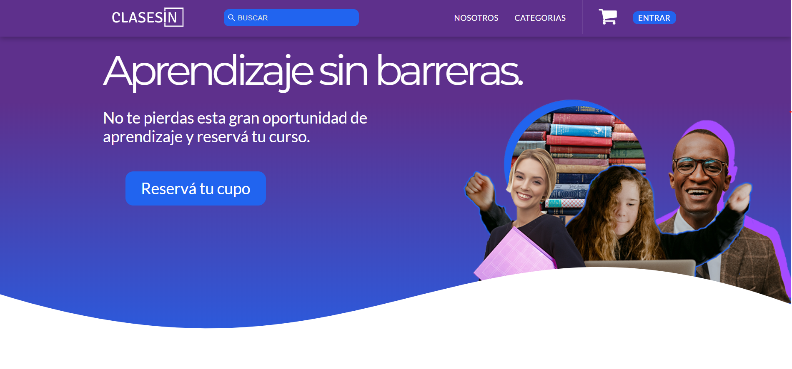

Acerca de mí
Proficiencia en HTML5, CSS, SASS y JavaScript

Manejo de Git y de Metodologías Agile
Rápido aprendizaje y auto-didacta
Fluent in English 😉
Proficiencia en HTML5, CSS, SASS y JavaScript
Manejo de Git y de Metodologías Agile
Rápido aprendizaje y auto-didacta
Fluent in English 😉
GifOS
Aplicación web que utiliza la API REST de GIPHY para permitir al usuario obtener sugerencias de GIFs, tendencias, búsquedas personalizadas y crear su propio GIF con el uso de la cámara. Segundo proyecto del programa de Full Stack Web Development de Acámica en Buenos Aires, Argentina.
ClasesIN
Sitio web de una plataforma de eLearning argentina llamada ClasesIN. Fue diseñada con el objetivo de hacer la página lo más accesible posible y ofrecer cursos institucionales para facilitar la inserción laboral de personas con discapacidades.
Hello pale blue dot.
Landing Page completamente responsiva para un programa de podcasts realizado con HTML y CSS con la ayuda de los iFrames provistos por Spotify. Este proyecto es parte del programa de Desarrollo Web de Acámica.
Recreación de Landing Page de Google

Recreación de la Landing Page de Google incluyendo la página de resultados, primer proyecto HTML y CSS parte del programa educativo de The Odin Project.
Actualmente trabajando en proyectos con HTML, CSS, SASS y Vanilla Javascript e igualmente en familiarizarme con otras tecnologías como ReactJS.